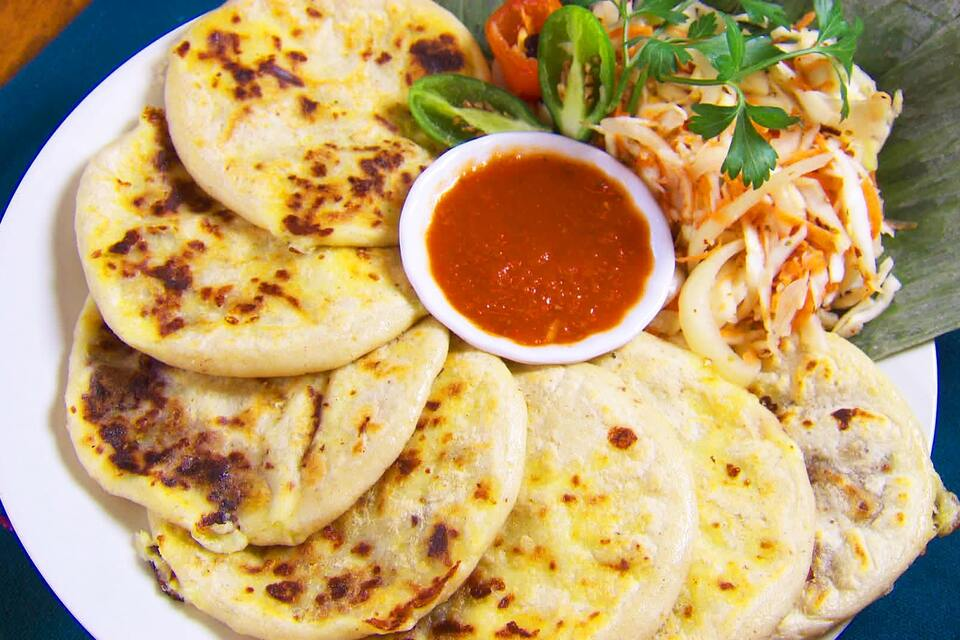

How to make Pupusas

Pupusas are El Salvador's most popular dish
Pupusas are made out of dough a wide variety of fillings. My favorite way of ordering pupusas is with cheese, loroco, and bean filling.
Ingredients:
- corn dough
- cheese
- loroco
- frijoles
Step-by-Step guide:
- IDK how to cook my mommy did it for me